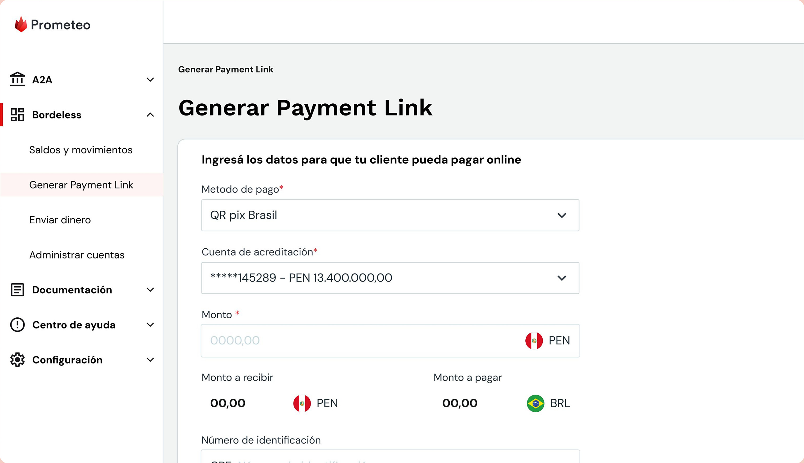
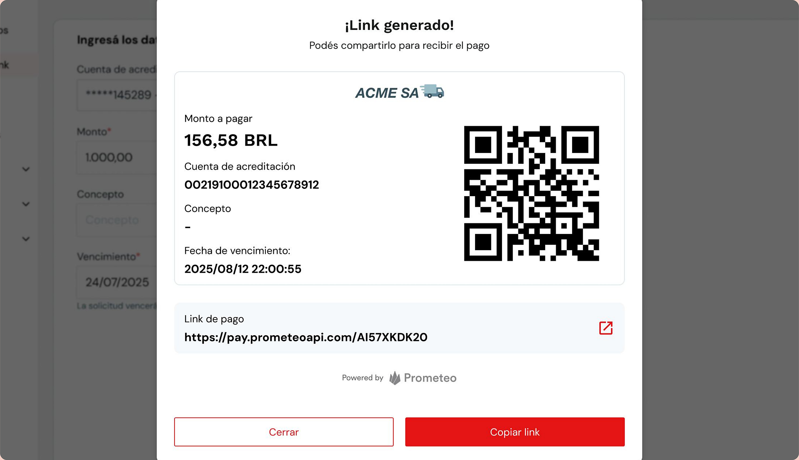
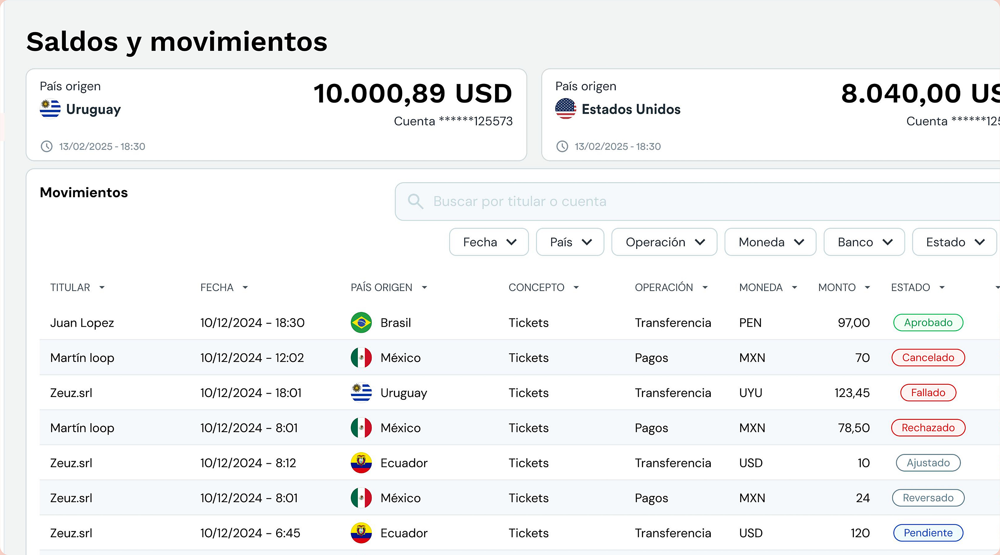

NUEVA SOLUCIÓN
Proyecto: Qué resolvimos
Diseñamos una experiencia que simplifica la generación y gestión de cobros en Perú y Brasil, permitiendo a los clientes operar con múltiples medios de pago y diferentes monedas, incluyendo la generación de links de pago, desde un entorno ágil y centralizado.
La solución busca reducir las fricciones en el proceso de cobro, facilitar la conversión de ventas y mejorar el acceso al dinero, adaptándose a las necesidades de cada mercado.
Contexto: Porqué era necesario
El desafío consistía en ofrecer una experiencia que permitiera gestionar diferentes medios de pago desde un mismo lugar, contemplando tanto las necesidades operativas de los clientes como los objetivos comerciales del producto.
En este escenario, trabajamos sobre la experiencia de generación y administración de cobros, buscando identificar oportunidades para simplificar los procesos y facilitar las operaciones cotidianas.
Mi rol: Qué lideré
Participé en el diseño de la experiencia de cobros, trabajando en la comprensión de los requerimientos, la definición de flujos y el diseño de interfaces.
Mi contribución estuvo enfocada en transformar necesidades del negocio y de los usuarios en soluciones claras y funcionales, colaborando con el equipo de Producto y Tecnología para asegurar la coherencia de la experiencia y su viabilidad de implementación.

Estrategia: Cómo abordamos el problema
01. Comprender la experiencia de cobro
Durante el análisis de los pagos presenciales, identificamos un punto de dolor crítico: los comercios no contaban con un espacio centralizado donde verificar, en tiempo real, si el pago realizado por un cliente había sido acreditado.
Esta falta de visibilidad generaba incertidumbre al momento de confirmar la operación y autorizar la entrega del producto, afectando tanto la experiencia del comercio como la del comprador.
02. Simplificar y centralizar las operaciones
Diseñamos una experiencia responsive que permite a los clientes realizar pagos presenciales mediante el escaneo de un código QR, mientras que los comercios pueden consultar el estado de cada transacción en tiempo real desde una plataforma centralizada.
Gracias a la integración con entidades bancarias locales a través de APIs, logramos conectar el proceso de pago con su seguimiento, reduciendo la incertidumbre al momento de confirmar la operación y liberar la compra.
03. Conectar la experiencia con los resultados del negocio
Priorizamos la visibilidad del estado de los pagos en tiempo real, integrándola en una experiencia centralizada que permite a los comercios verificar las transacciones y tomar decisiones con mayor agilidad y confianza.
NUEVA PROPUESTA
Solución: Qué cambió
Una experiencia que conecta el momento de cobrar con la certeza de haber recibido el pago.
Generación de cobros multidivisa.
Diseñamos un flujo para configurar el medio de pago, la cuenta de acreditación y el monto de la operación. La interfaz permite visualizar los importes en la moneda de origen y de destino, facilitando la comprensión del cobro antes de generar el link.

Pagos mediante link y código QR.
Simplificamos la instancia de cobro generando un enlace y un código QR que el comercio puede compartir con su cliente. Esto permite iniciar el pago de forma digital, incluso en situaciones de atención presencial.

Seguimiento centralizado de las operaciones.
Incorporamos una vista de movimientos con información sobre país, moneda, monto y estado de cada transacción. Los filtros y la búsqueda permiten localizar operaciones y consultar su situación desde un mismo lugar, con estados actualizados en vivo.
